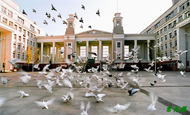
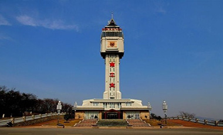
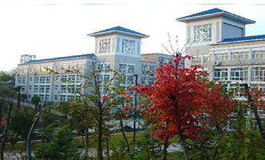
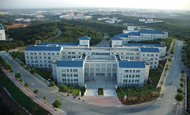
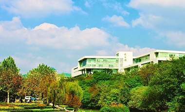
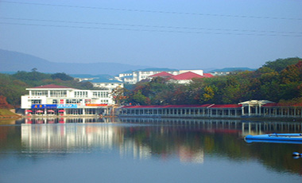
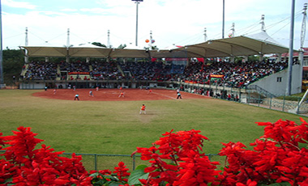
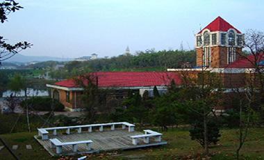

南工乐园
......................校园建筑，校园风景，校园环境实拍图 ......................

“百团大战”主战场，晚上是极限运动的乐园，滑板、旱冰，周末还有热卖场哦...
沉毅广场

南工的标志，校内最高建筑物，充满了神秘感，夜晚约会绝佳地点，看星星的好地方。
天宝阁

拥有优雅的环境，每天都有早起的人在此晨读，在楼上可鸟瞰校园
仁智楼

位于老山脚下，四周森林环绕，蓝色的房顶如宝石般装饰着南工。
江浦校区鸟瞰
拥有多个计算机教室，为学生开放，初次选课地点，位于逸夫图书馆旁。
计算中心

校内最大的图书馆，藏书万卷，自习的绝佳地点，考试前三周必爆满。
逸夫图书馆

湖面犹如明镜，湖边长廊环绕，水中有游鱼，夜间景光灯照射，美轮美奂。
镜湖

2013年南京青奥会比赛场地之一，受到国外友人的广泛赞誉。
垒球场

美食聚集地，和清真食堂位于同一地点，无论是何种名族，来自何处，这里能满足你的需求。
北苑餐厅